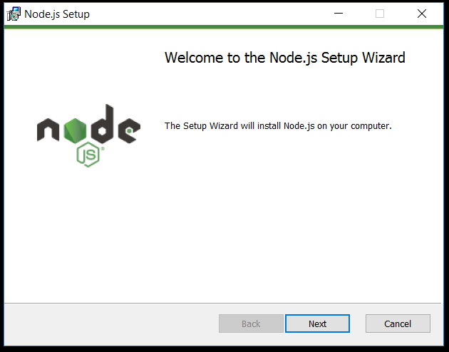
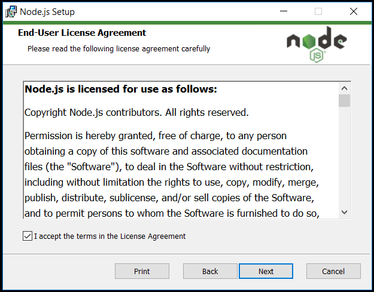
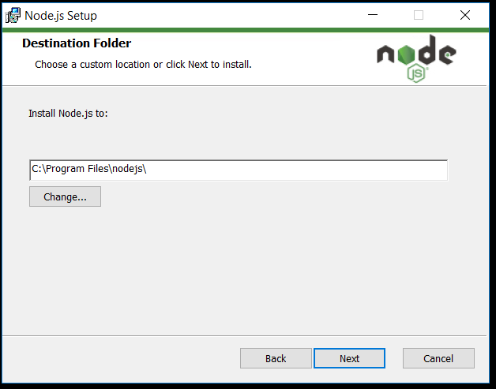
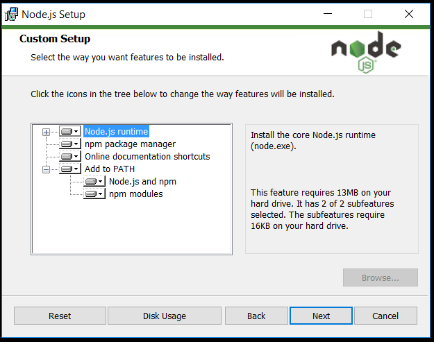
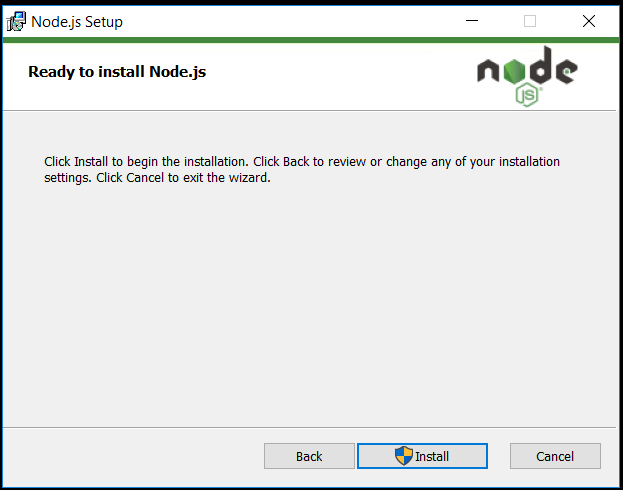
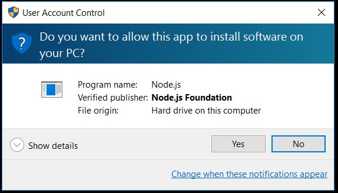
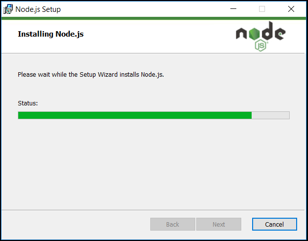

Installing NodeJS on Windows
-
Download the installer
Go to NodeJS web site and click the left button, the one that says LTS (Long-Term Support).
-
Run the installer
The package will be downloaded through the Mac OS download manager. Double-click on it.
-
Welcome
Click "Next"
 -
License
Check "I accept the terms in the License Agreement" and click "Next"
 -
Installation Location
Select the Installation Locaiton and click "Next"
 -
Setup
Click "Next"
It is very important to have "npm package manager" selected to be installed as all in "Add to PATH". This will be very useful later on.
-
Install
Click "Install"
 -
Allow changes
Click "Yes"
 -
And we're done!
Click "Finish"
The actual installation takes place...
 -
-
Confirm installation
Go to the Command Prompt and type:
> node -vThe output should be something like this:
v4.4.5
Also test npm is installed because it's a key component. Type:
> npm -vThe output should be something like this:
2.15.5